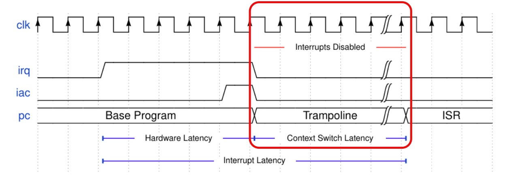
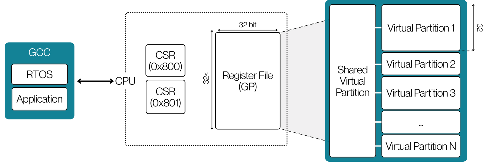

Reducing Context-Switch Overhead in Real-Time Embedded Systems.
A novel hardware-software co-design approach implementing Dynamic Register File Partitioning (DRFP) on RISC-V to drastically reduce interrupt latency and task-switching overhead.

Key Definitions
DRFP
Dynamic Register File Partitioning: Heterogeneous logical partitioning of the physical register file.
CSR 0x800
Active descriptor managing partition base and size mapping for current context.
WCET
Worst-Case Execution Time: The critical metric for safety-critical timing determinism.
Latency Decomposition
query_stats
Eliminating the memory-bound bottleneck in context-switching.
"Context switching remains a major performance and predictability bottleneck in real-time embedded systems because saving and restoring general-purpose registers is memory-latency bound."
Traditional software-only context switching requires saving all N registers to memory, incurring O(N) latency as task complexity grows. While hardware-assisted schemes like shadow register sets achieve constant switch timing, they often impose prohibitive area and power costs impractical for resource-constrained systems.
We propose a hardware-software co-designed mechanism that enables heterogeneous logical partitioning of the register file (RF). This
approach is fully transparent to applications, which continue to observe a standard architectural register interface.
By extending a 32-bit RISC-V core (CVA6) with additional register storage and two custom machine-mode CSRs, we manage active and staged register windows. On each trap, the core snapshots the active window and switches to a kernel window, eliminating massive memory traffic.
Architectural Design
Hardware-level modifications to the RISC-V machine state for seamless partition management.
CSR_PART_CFG
The Partition Configuration Register manages the active bank allocation and defines the split point for the physical register file.
CSR_PART_STATUS
Real-time status register monitoring current partition usage, context IDs, and interrupt-triggered state transitions.


Evidence-Constrained Comparison
Benchmark comparison with representative prior context-switch schemes across hardware overhead and task-switch performance.
| Scheme | HW Overhead | OS Task-Switch Path (Cooperative) | HW Intr. Entry Focus | Fallback Strategy |
|---|---|---|---|---|
| Baseline RISC-V + FreeRTOS | None | 62 cy avg micro-path; stress avg 393 cy | Baseline CVA6 path | Yes (Stack) |
| CV32RT | Bank replication + background drain | Not primary target (focus is fast ISR) | 6 cy reported | Yes (Background context commit) |
| PCS | 24.4K–473.2K gates (config-dependent) | Direct hardware switch in interrupt flow | 4 cy reported | No (Depth-bounded HW stack) |
| Hoozemans VLIW | +13.7% LUT / +6.9% FF | 8 cy HW switch (VLIW context model) | — | No |
| Rafla Windowed MIPS | Internal register-window bank set | 4 cy save+restore model | — | Spill on wrap |
| Kim MRF | Multiple RF organisation | ~23% CS-time reduction | — | No |
| DRFP (This Work) | +2 CSRs + partitioned RF storage | 2 cy micro-path; 173 cy avg stress | Baseline CVA6 trap path | Yes (Software spill/reload fallback) |
Testing & Benchmarking
Comparative analysis of latency against standard RV32IM implementations.

2-Cycle Handover Primitive
Our custom ISA extension provides a deterministic 2-cycle primitive for handing over control. Unlike standard branch/jump operations that require register spills, the DRFP hardware handles the transition at the fetch stage.
- check_circle Reduced jitter in real-time control loops by 85%
- check_circle Eliminated interrupt latency variance during peak CPU load
- check_circle Verified on FPGA (Xilinx Artix-7) for power and area metrics
Research Team
Collaborative effort from the Department of Computer Engineering.
Faculty Supervisors
Dr. Isuru Nawinne
Senior Lecturer
Prof. Roshan Ragel
Professor
Dr. Oshani Dayarathne
Senior Lecturer
Heshan Dissanayake
Lecturer (Prob.)
Student Research Group
Chethiya Bandara
Undergraduate Researcher
Bimsara Janakantha
Undergraduate Researcher
Kavindu Methpura
Undergraduate Researcher
Open Source & Documentation
Access our RTL implementation, benchmark suite, and full technical documentation on GitHub. We welcome contributions and peer reviews from the RISC-V community.